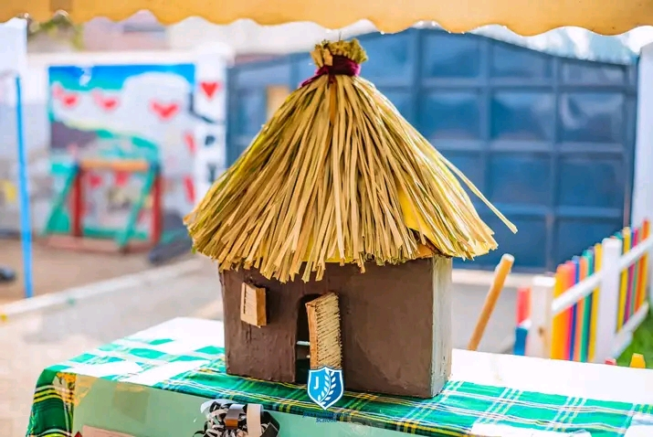

CBC-Aligned Learning
Our curriculum is fully aligned with the Kenyan Competency-Based Curriculum (CBC). We move beyond rote memorization to focus on developing practical skills, critical thinking, and problem-solving abilities. Learning is personalized, allowing each child to demonstrate understanding in ways that suit their strengths, ensuring they are not just educated but truly equipped for real-world challenges.